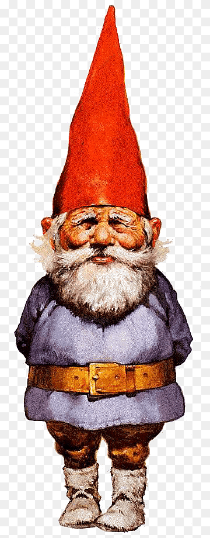

Em um vilarejo tinha
Vela estava com uma neblina fraca e a vista um jardim e uma árvore grande então decido ir
um poço,fui até e ele estava com um barril
no jardim o clima está ótimo

é um grande e lindo baóba fico sentado em um banquinho ouvindo os passaros cantarolar.
ele estava pesado, nele tinha flores e elas eram coloridas como o verão
deixar o barril quieto
pretendo entregar para minha esposa, quero voltar para casa
na ponte tinha muitas flores
na frente vejo alguém muito agasalhado
depois de passar pelo jardim vejo algo pequeno todo coberto

O Anâo ficou com raiva de vocẽ ter invadido o jardim dele e te inforcou com as flores que você estava. FIM
chego perto e perto e vejo que não é tão pequeno então resolvo ir